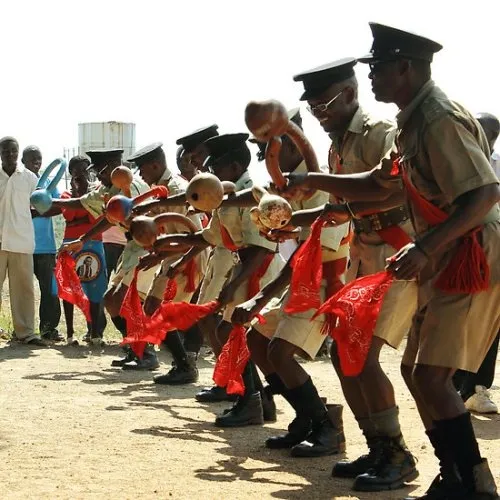
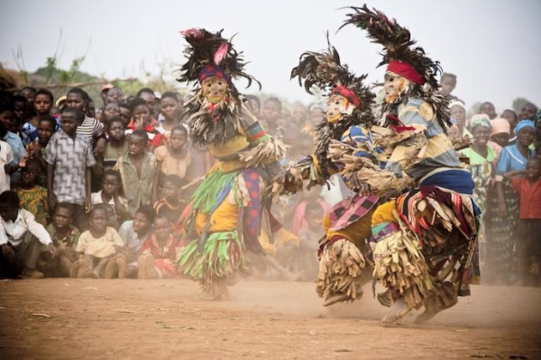

Tradition
Dance- Malawi holds a lot of dances that is attached to tradition and one of the very famous ones is Gulewamkulu Traditional Dance. It is a dance performed by the Chewa people of Malawi. This dance was brought by the Chewa ancestors, they said it was a way to talk to the souls of their dead and gods. This dance goes with costumes like masks and energetic movements. Drums and singing are used for the dancers as they dance to the sound. All the dances in Malawi hold deep meaning and significance and represent the connection the people of Malawi have with their heritage and culture.
